The TikZ and PGF Packages
Manual for version 3.1.9a
TikZ
17 Nodes and Edges
17.1 Overview¶
In the present section, the usage of nodes in TikZ is explained. A node is typically a rectangle or circle or another simple shape with some text on it.
Nodes are added to paths using the special path operation node. Nodes are not part of the path itself. Rather, they are added to the picture just before or after the path has been drawn.
In Section 17.2 the basic syntax of the node operation is explained, followed in Section 17.3 by the syntax for multi-part nodes, which are nodes that contain several different text parts. After this, the different options for the text in nodes are explained. In Section 17.5 the concept of anchors is introduced along with their usage. In Section 17.7 the different ways transformations affect nodes are studied. Sections 17.8 and 17.9 are about placing nodes on or next to straight lines and curves. Section 17.11 explains how a node can be used as a “pseudo-coordinate”. Section 17.12 introduces the edge operation, which works similar to the to operation and also similar to the node operation.
17.2 Nodes and Their Shapes¶
In the simplest case, a node is just some text that is placed at some coordinate. However, a node can also have a border drawn around it or have a more complex background and foreground. Indeed, some nodes do not have a text at all, but consist solely of the background. You can name nodes so that you can reference their coordinates later in the same picture or, if certain precautions are taken as explained in Section 17.13, also in different pictures.
There are no special TeX commands for adding a node to a picture; rather, there is path operation called node for this. Nodes are created whenever TikZ encounters node or coordinate at a point on a path where it would expect a normal path operation (like -- (1,1) or rectangle (1,1)). It is also possible to give node specifications inside certain path operations as explained later.
The node operation is typically followed by some options, which apply only to the node. Then, you can optionally name the node by providing a name in parentheses. Lastly, for the node operation you must provide some label text for the node in curly braces, while for the coordinate operation you may not. The node is placed at the current position of the path either after the path has been drawn or (more seldomly and only if you add the behind path option) just before the path is drawn. Thus, all nodes are drawn “on top” or “behind” the path and are retained until the path is complete. If there are several nodes on a path, perhaps some behind and some on top of the path, first come the nodes behind the path in the order they were encountered, then comes that path, and then come the remaining node, again in the order they are encountered.
17.2.1 Syntax of the Node Command¶
The syntax for specifying nodes is the following:
\path … node ⟨foreach statements⟩ [⟨options⟩] (⟨name⟩) at(⟨coordinate⟩) :⟨animation attribute⟩={⟨options⟩} {⟨node contents⟩} …;
Since this path operation is one of the most involved around, let us go over it step by step.
Order of the parts of the specification. Everything between “node” and the opening brace of a node is optional. If there are ⟨foreach statements⟩, they must come first, directly following “node”. Other than that, the ordering of all the other elements of a node specification (the ⟨options⟩, the ⟨name⟩, ⟨coordinate⟩, and ⟨animation attribute⟩) is arbitrary, indeed, there can be multiple occurrences of any of these elements (although for the name and the coordinate this makes no sense).
The text of a node. At the end of a node, you must (normally) provide some ⟨node contents⟩ in curly braces; indeed, the “end” of the node specification is detected by the opening curly brace. For normal nodes it is possible to use “fragile” stuff inside the ⟨node contents⟩ like the \verb command (for the technically savvy: code inside the ⟨node contents⟩ is allowed to change catcodes; however, this rule does not apply to “nodes on a path” to be discussed later).
Instead of giving ⟨node contents⟩ at the end of the node in curly braces, you can also use the following key:
/tikz/node contents=⟨node contents⟩(no default) ¶
This key sets the contents of the node to the given text as if you had given it at the end in curly braces. When the option is used inside the options of a node, the parsing of the node stops immediately after the end of the option block. In particular, the option block cannot be followed by further option blocks or curly braces (or, rather, these do not count as part of the node specification.) Also note that the ⟨node contents⟩ may not contain fragile stuff since the catcodes get fixed upon reading the options. Here is an example:
\tikz {
\path (0,0) node
[red] {A}
(1,0) node
[blue] {B}
(2,0) node
[green, node contents=C]
(3,0) node
[node contents=D] ;
}
Specifying the location of the node. Nodes are placed at the last position mentioned on the path. The effect of adding “at” to a node specification is that the coordinate given after at is used instead. The at syntax is not available when a node is given inside a path operation (it would not make any sense there).
/tikz/at=⟨coordinate⟩(no default)
This is another way of specifying the at coordinate. Note that, typically, you will have to enclose the ⟨coordinate⟩ in curly braces so that a comma inside the ⟨coordinate⟩ does not confuse TeX.
Another aspect of the “location” of a node is whether it appears in front of or behind the current path. You can change which of these two possibilities happens on a node-by-node basis using the following keys:
/tikz/behind path(no value) ¶
When this key is set, either as a local option for the node or some surrounding scope, the node will be drawn behind the current path. For this, TikZ collects all nodes defined on the current path with this option set and then inserts all of them, in the order they appear, just before it draws the path. Thus, several nodes with this option set may obscure one another, but never the path itself. “Just before it draws the path” actually means that the nodes are inserted into the page output just before any pre-actions are applied to the path (see below for what pre-actions are).
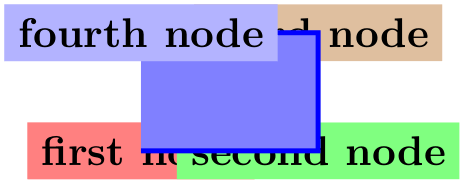
Note that behind path only applies to the current path; not to the current scope or picture. To put a node “behind everything” you need to use layers and options like on background layer, see the backgrounds library in Section 45.
/tikz/in front of path(no value) ¶
This is the opposite of behind path: It causes nodes to be drawn on top of the path. Since this is the default behavior, you usually do not need this option; it is only needed when an enclosing scope has used behind path and you now wish to “switch back” to the normal behavior.
The name of a node. The (⟨name⟩) is a name for later reference and it is optional. You may also add the option name=⟨name⟩ to the ⟨option⟩ list; it has the same effect.
/tikz/name=⟨node name⟩(no default)
Assigns a name to the node for later reference. Since this is a “high-level” name (drivers never know of it), you can use spaces, number, letters, or whatever you like when naming a node. Thus, you can name a node just 1 or perhaps start of chart or even y_1. Your node name should not contain any punctuation like a dot, a comma, or a colon since these are used to detect what kind of coordinate you mean when you reference a node.
/tikz/alias=⟨another node name⟩(no default) ¶
This option allows you to provide another name for the node. Giving this option multiple times will allow you to access the node via several aliases. Using the node also syntax, you can also assign an alias name to a node at a later point, see Section 17.14.
The options of a node. The ⟨options⟩ is an optional list of options that apply only to the node and have no effect outside. The other way round, most “outside” options also apply to the node, but not all. For example, the “outside” rotation does not apply to nodes (unless some special options are used, sigh). Also, the outside path action, like draw or fill, never applies to the node and must be given in the node (unless some special other options are used, deep sigh).
The shape of a node. As mentioned before, we can add a border and even a background to a node:
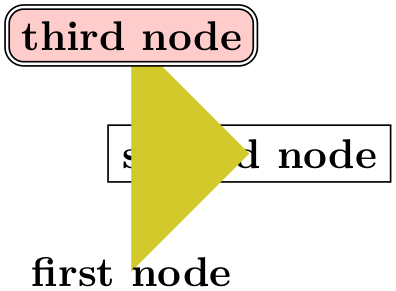
The “border” is actually just a special case of a much more general mechanism. Each node has a certain shape which, by default, is a rectangle. However, we can also ask TikZ to use a circle shape instead or an ellipse shape (you have to include one of the shapes.geometric library for the latter shape):
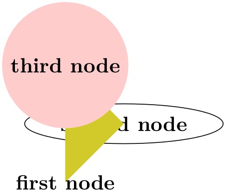
There are many more shapes available such as, say, a shape for a resistor or a large arrow, see the shapes library in Section 70 for details.
To select the shape of a node, the following option is used:
/tikz/shape=⟨shape name⟩ (no default, initially rectangle) ¶
Select the shape either of the current node or, when this option is not given inside a node but somewhere outside, the shape of all nodes in the current scope.
Since this option is used often, you can leave out the shape=. When TikZ encounters an option like circle that it does not know, it will, after everything else has failed, check whether this option is the name of some shape. If so, that shape is selected as if you had said shape=⟨shape name⟩.
By default, the following shapes are available: rectangle, circle, coordinate. Details of these shapes, like their anchors and size options, are discussed in Section 17.2.2.
Animating a node. When you say :⟨animation attribute⟩={⟨options⟩}, an animation of the specified attribute is added to the node. Animations are discussed in detail in Section 26. Here is a typical example of how this syntax can be used:
The foreach statement for nodes. At the beginning of a node specification (and only there) you can provide multiple ⟨foreach statements⟩, each of which has the form foreach ⟨var⟩ in ⟨list⟩ (note that there is no backslash before foreach). When they are given, instead of a single node, multiple nodes will be created: The ⟨var⟩ will iterate over all values of ⟨list⟩ and for each of them, a new node is created. These nodes are all created using all the text following the ⟨foreach statements⟩, but in each copy the ⟨var⟩ will have the current value of the current element in the ⟨list⟩.
As an example, the following two codes have the same effect:

When you provide several foreach statements, they work like “nested loops”:
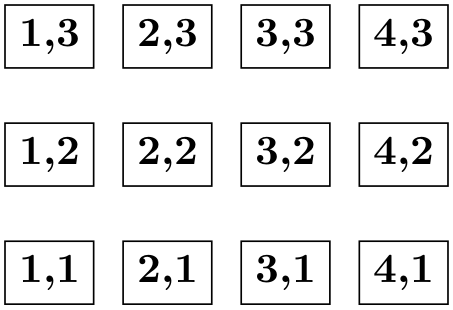
As the example shows, a ⟨list⟩ can contain ellipses (three dots) to indicate that a larger number of numbers is meant. Indeed, you can use the full power of the \foreach command here, including multiple parameters and options, see Section 87.
Styles for nodes. The following styles influence how nodes are rendered:
/tikz/every node(style, initially empty) ¶
This style is installed at the beginning of every node.
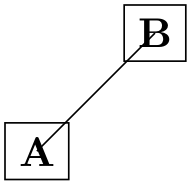
\begin{tikzpicture}[every node/.style={draw}]
\draw (0,0) node
{A} --
(1,1) node
{B};
\end{tikzpicture}
/tikz/every ⟨shape⟩ node(style, initially empty) ¶
These styles are installed at the beginning of a node of a given ⟨shape⟩. For example, every rectangle node is used for rectangle nodes, and so on.
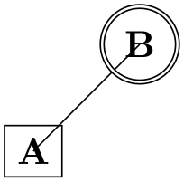
/tikz/execute at begin node=⟨code⟩(no default) ¶
This option causes ⟨code⟩ to be executed at the beginning of a node. Using this option multiple times will cause the code to accumulate.
/tikz/execute at end node=⟨code⟩(no default) ¶
This option installs ⟨code⟩ that will be executed at the end of the node. Using this option multiple times will cause the code to accumulate.
\begin{tikzpicture}
[execute at begin node={A},
execute at end node={D}]
\node[execute at begin node={B}] {C};
\end{tikzpicture}
Name scopes. It turns out that the name of a node can further be influenced using two keys:
/tikz/name prefix=⟨text⟩ (no default, initially empty) ¶
The value of this key is prefixed to every node inside the current scope. This includes both the naming of the node (via the name key or via the implicit (⟨name⟩) syntax) as well as any referencing of the node. Outside the scope, the nodes can (and need to) be referenced using “full name” consisting of the prefix and the node name.
The net effect of this is that you can set the name prefix at the beginning of a scope to some value and then use short and simple names for the nodes inside the scope. Later, outside the scope, you can reference the nodes via their full name:
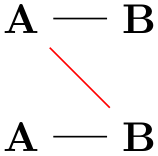
As can be seen, name prefixing makes it easy to write reusable code.
/tikz/name suffix=⟨text⟩ (no default, initially empty) ¶
Works as name prefix, only the ⟨text⟩ is appended to every node name in the current scope.
There is a special syntax for specifying “light-weight” nodes:
\path … coordinate[⟨options⟩](⟨name⟩)at(⟨coordinate⟩) …; ¶
This has the same effect as
\node[shape=coordinate][⟨options⟩](⟨name⟩)at(⟨coordinate⟩){},
where the at part may be omitted.
Since nodes are often the only path operation on paths, there are two special commands for creating paths containing only a node:
\node ¶
Inside {tikzpicture} this is an abbreviation for \path node.
\coordinate ¶
Inside {tikzpicture} this is an abbreviation for \path coordinate.
17.2.2 Predefined Shapes¶
pgf and TikZ define three shapes, by default:
-
• rectangle,
-
• circle, and
-
• coordinate.
By loading library packages, you can define more shapes like ellipses or diamonds; see Section 70 for the complete list of shapes.
The coordinate shape is handled in a special way by TikZ. When a node x whose shape is coordinate is used as a coordinate (x), this has the same effect as if you had said (x.center). None of the special “line shortening rules” apply in this case. This can be useful since, normally, the line shortening causes paths to be segmented and they cannot be used for filling. Here is an example that demonstrates the difference:
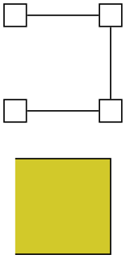
\begin{tikzpicture}[every node/.style={draw}]
\path[yshift=1.5cm,shape=rectangle]
(0,0) node(a1){} (1,0) node(a2){}
(1,1) node(a3){} (0,1) node(a4){};
\filldraw[fill=yellow!80!black] (a1) --
(a2) --
(a3) --
(a4);
\path[shape=coordinate]
(0,0) coordinate(b1) (1,0) coordinate(b2)
(1,1) coordinate(b3) (0,1) coordinate(b4);
\filldraw[fill=yellow!80!black] (b1) --
(b2) --
(b3) --
(b4);
\end{tikzpicture}
17.2.3 Common Options: Separations, Margins, Padding and Border Rotation¶
The exact behavior of shapes differs, shapes defined for more special purposes (like a, say, transistor shape) will have even more custom behaviors. However, there are some options that apply to most shapes:
/pgf/inner sep=⟨dimension⟩ (no default, initially .3333em) ¶
alias /tikz/inner sep
An additional (invisible) separation space of ⟨dimension⟩ will be added inside the shape, between the text and the shape’s background path. The effect is as if you had added appropriate horizontal and vertical skips at the beginning and end of the text to make it a bit “larger”.
For those familiar with css, this is the same as padding.
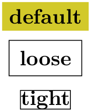
/pgf/inner xsep=⟨dimension⟩ (no default, initially .3333em) ¶
alias /tikz/inner xsep
Specifies the inner separation in the \(x\)-direction, only.
/pgf/inner ysep=⟨dimension⟩ (no default, initially .3333em) ¶
alias /tikz/inner ysep
Specifies the inner separation in the \(y\)-direction, only.
/pgf/outer sep=⟨dimension or “auto”⟩(no default) ¶
alias /tikz/outer sep
This option adds an additional (invisible) separation space of ⟨dimension⟩ outside the background path. The main effect of this option is that all anchors will move a little “to the outside”.
For those familiar with css, this is same as margin.
The default for this option is half the line width. When the default is used and when the background path is draw, the anchors will lie exactly on the “outside border” of the path (not on the path itself).
As the above example demonstrates, the standard settings for the outer sep are not always “correct”. First, when a shape is filled, but not drawn, the outer sep should actually be 0. Second, when a node is scaled, for instance by a factor of 5, the outer separation also gets scaled by a factor of 5, while the line width stays at its original width; again causing problems.
In such cases, you can say outer sep=auto to make TikZ try to compensate for the effects described above. This is done by, firstly, setting the outer sep to 0 when no drawing is done and, secondly, setting the outer separations to half the line width (as before) times two adjustment factors, one for the horizontal separations and one for the vertical separations (see Section 107.2.6 for details on these factors). Note, however, that these factors can compensate only for transformations that are either scalings plus rotations or scalings with different magnitudes in the horizontal and the vertical direction. If you apply slanting, the factors will only approximate the correct values.
In general, it is a good idea to say outer sep=auto at some early stage. It is not the default mainly for compatibility with earlier versions.
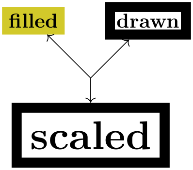
/pgf/outer xsep=⟨dimension⟩ (no default, initially .5\pgflinewidth) ¶
alias /tikz/outer xsep
Specifies the outer separation in the \(x\)-direction, only. This value will be overwritten when outer sep is set, either to the value given there or a computed value in case of auto.
/pgf/outer ysep=⟨dimension⟩ (no default, initially .5\pgflinewidth) ¶
alias /tikz/outer ysep
Specifies the outer separation in the \(y\)-direction, only.
/pgf/minimum height=⟨dimension⟩ (no default, initially 1pt) ¶
alias /tikz/minimum height
This option ensures that the height of the shape (including the inner, but ignoring the outer separation) will be at least ⟨dimension⟩. Thus, if the text plus the inner separation is not at least as large as ⟨dimension⟩, the shape will be enlarged appropriately. However, if the text is already larger than ⟨dimension⟩, the shape will not be shrunk.
\begin{tikzpicture}
\draw (0,0) node[minimum height=1cm,draw] {1cm}
(2,0) node[minimum height=0cm,draw] {0cm};
\end{tikzpicture}
/pgf/minimum width=⟨dimension⟩ (no default, initially 1pt) ¶
alias /tikz/minimum width
Same as minimum height, only for the width.
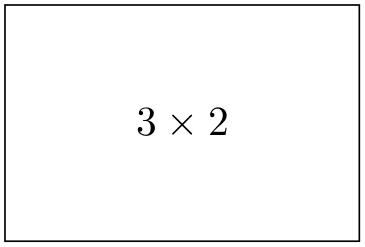
\begin{tikzpicture}
\draw (0,0) node[minimum height=2cm,minimum width=3cm,draw] {$3
\times 2$};
\end{tikzpicture}
/pgf/minimum size=⟨dimension⟩(no default) ¶
alias /tikz/minimum size
Sets both the minimum height and width at the same time.
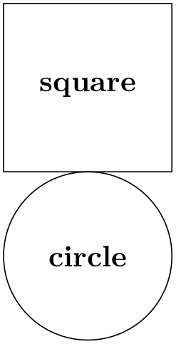
\begin{tikzpicture}
\draw (0,0) node[minimum size=2cm,draw] {square};
\draw (0,-2) node[minimum size=2cm,draw,circle] {circle};
\end{tikzpicture}
/pgf/shape aspect=⟨aspect ratio⟩(no default) ¶
alias /tikz/shape aspect
Sets a desired aspect ratio for the shape. For the diamond shape, this option sets the ratio between width and height of the shape.
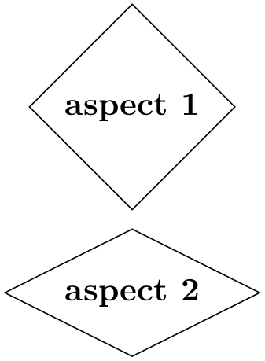
\usetikzlibrary {shapes.geometric}
\begin{tikzpicture}
\draw (0,0) node[shape aspect=1,diamond,draw] {aspect
1};
\draw (0,-2) node[shape aspect=2,diamond,draw] {aspect
2};
\end{tikzpicture}
Some shapes (but not all), support a special kind of rotation. This rotation affects only the border of a shape and is independent of the node contents, but in addition to any other transformations.
\usetikzlibrary {shapes.geometric}
\tikzset{every node/.style={dart, shape border uses incircle,
inner sep=1pt, draw}}
\tikz \node foreach
\a/\b/\c in
{A/0/0, B/45/0, C/0/45, D/45/45}
[shape border rotate=\b, rotate=\c] at
(\b/36,-\c/36) {\a};
There are two types of rotation: restricted and unrestricted. Which type of rotation is applied is determined by on how the shape border is constructed. If the shape border is constructed using an incircle, that is, a circle that tightly fits the node contents (including the inner sep), then the rotation can be unrestricted. If, however, the border is constructed using the natural dimensions of the node contents, the rotation is restricted to integer multiples of 90 degrees.
Why should there be two kinds of rotation and border construction? Borders constructed using the natural dimensions of the node contents provide a much tighter fit to the node contents, but to maintain this tight fit, the border rotation must be restricted to integer multiples of 90 degrees. By using an incircle, unrestricted rotation is possible, but the border will not make a very tight fit to the node contents.

\usetikzlibrary {shapes.geometric}
\tikzset{every node/.style={isosceles triangle, draw}}
\begin{tikzpicture}
\node {abc};
\node [shape border uses incircle] at
(2,0) {abc};
\end{tikzpicture}
There are pgf keys that determine how a shape border is constructed, and to specify its rotation. It should be noted that not all shapes support these keys, so reference should be made to the documentation for individual shapes.
/pgf/shape border uses incircle=⟨boolean⟩ (default true) ¶
alias /tikz/shape border uses incircle
Determines if the border of a shape is constructed using the incircle. If no value is given ⟨boolean⟩ will take the default value true.
/pgf/shape border rotate=⟨angle⟩ (no default, initially 0) ¶
alias /tikz/shape border rotate
Rotates the border of a shape independently of the node contents, but in addition to any other transformations. If the shape border is not constructed using the incircle, the rotation will be rounded to the nearest integer multiple of 90 degrees when the shape is drawn.
Note that if the border of the shape is rotated, the compass point anchors, and ‘text box’ anchors (including mid east, base west, and so on), do not rotate, but the other anchors do:
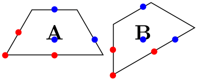
\usetikzlibrary {shapes.geometric}
\tikzset{every node/.style={shape=trapezium, draw, shape border uses incircle}}
\begin{tikzpicture}
\node at
(0,0) (A) {A};
\node [shape border rotate=30] at
(1.5,0) (B) {B};
\foreach \s/\t in
{left
side/base
east, bottom
side/north, bottom
left
corner/base}{
\fill[red] (A.\s) circle(1.5pt) (B.\s) circle(1.5pt);
\fill[blue] (A.\t) circle(1.5pt) (B.\t) circle(1.5pt);
}
\end{tikzpicture}
Finally, a somewhat unfortunate side-effect of rotating shape borders is that the supporting shapes do not distinguish between outer xsep and outer ysep, and typically, the larger of the two values will be used.
17.3 Multi-Part Nodes¶
Most nodes just have a single simple text label. However, nodes of a more complicated shape might be made up from several node parts. For example, in automata theory a so-called Moore state has a state name, drawn in the upper part of the state circle, and an output text, drawn in the lower part of the state circle. These two parts are quite independent. Similarly, a uml class shape would have a name part, a method part, and an attributes part. Different molecule shapes might use parts for the different atoms to be drawn at the different positions, and so on.
Both pgf and TikZ support such multipart nodes. On the lower level, pgf provides a system for specifying that a shape consists of several parts. On the TikZ level, you specify the different node parts by using the following command:
\nodepart[⟨options⟩]{⟨part name⟩} ¶
This command can only be used inside the ⟨text⟩ argument of a node path operation. It works a little bit like a \part command in LaTeX. It will stop the typesetting of whatever node part was typeset until now and then start putting all following text into the node part named ⟨part name⟩ – until another \nodepart is encountered or until the node ⟨text⟩ ends. The ⟨options⟩ will be local to this part.
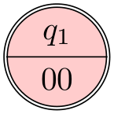
\usetikzlibrary {shapes.multipart}
\begin{tikzpicture}
\node [circle split,draw,double,fill=red!20]
{
% No \nodepart has been used, yet. So, the following is put
in the
% ``text'' node part by default.
$q_1$
\nodepart{lower} % Ok, end ``text'' part, start ``output'' part
$00$
}; % output part ended.
\end{tikzpicture}
You will have to lookup which parts are defined by a shape.
The following styles influences node parts:
17.4 The Node Text¶
17.4.1 Text Parameters: Color and Opacity¶
The simplest option for the text in nodes is its color. Normally, this color is just the last color installed using color=, possibly inherited from another scope. However, it is possible to specifically set the color used for text using the following option:
/tikz/text=⟨color⟩(no default) ¶
Sets the color to be used for text labels. A color= option will immediately override this option.
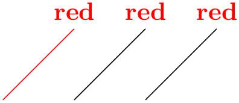
Just like the color itself, you may also wish to set the opacity of the text only. For this, use the text opacity option, which is detailed in Section 23.
17.4.2 Text Parameters: Font¶
Next, you may wish to adjust the font used for the text. Naturally, you can just use a font command like \small or \rm at the beginning of a node. However, the following two options make it easier to set the font used in nodes on a general basis. Let us start with:
/tikz/node font=⟨font commands⟩(no default) ¶
This option sets the font used for all text used in a node.
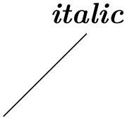
\begin{tikzpicture}
\draw[node font=\itshape] (1,0) --
+(1,1) node[above] {italic};
\end{tikzpicture}
Since the ⟨font commands⟩ are executed at a very early stage in the construction of the node, the font selected using this command will also dictate the values of dimensions defined in terms of em or ex. For instance, when the minimum height of a node is 3em, the actual height will be (at least) three times the line distance selected by the ⟨font commands⟩:
\tikz \node [node font=\tiny, minimum height=3em, draw] {tiny};
\tikz \node [node font=\small, minimum height=3em, draw] {small};
The other font command is:
/tikz/font=⟨font commands⟩(no default) ¶
Sets the font used for the text inside nodes. However, this font will not (yet) be installed when any of the dimensions of the node are being computed, so dimensions like 1em will be with respect to the font used outside the node (usually the font that was in force when the picture started).
\begin{tikzpicture}
\node [font=\itshape] {italic};
\end{tikzpicture}
\tikz \node [font=\tiny, minimum height=3em, draw] {tiny};
\tikz \node [font=\small, minimum height=3em, draw] {small};
A useful example of how the font option can be used is the following:
As can be seen, the font can be changed for each node part. This does not work with the node font command since, as the name suggests, this command can only be used to select the “overall” font for the node and this is done very early.
17.4.3 Text Parameters: Alignment and Width for Multi-Line Text¶
Normally, when a node is typeset, all the text you give in the braces is put in one long line (in an \hbox, to be precise) and the node will become as wide as necessary.
From time to time you may wish to create nodes that contain multiple lines of text. There are three different ways of achieving this:
-
1. Inside the node, you can put some standard environment that produces multi-line, aligned text. For instance, you can use a {tabular} inside a node:
This approach offers the most flexibility in the sense that it allows you to use all of the alignment commands offered by your format of choice.
-
2. You use \\ inside your node to mark the end of lines and then request TikZ to arrange these lines in some manner. This will only be done, however, if the align option has been given.
The \\ command takes an optional extra space as an argument in square brackets.
-
3. You can request that TikZ does an automatic line-breaking for you inside the node by specifying a fixed text width for the node. In this case, you can still use \\ to enforce a line-break. Note that when you specify a text width, the node will have this width, independently of whether the text actually “reaches the end” of the node.
Let us now first have a look at the text width command.
/tikz/text width=⟨dimension⟩(no default) ¶
This option will put the text of a node in a box of the given width (something akin to a {minipage} of this width, only portable across formats). If the node text is not as wide as ⟨dimension⟩, it will nevertheless be put in a box of this width. If it is larger, line breaking will be done.
By default, when this option is given, a ragged right border will be used (align=left). This is sensible since, typically, these boxes are narrow and justifying the text looks ugly. You can, however, change the alignment using align or directly using commands line \centering.

Setting ⟨dimension⟩ to an empty string causes the automatic line breaking to be disabled.
/tikz/align=⟨alignment option⟩(no default) ¶
This key is used to set up an alignment for multi-line text inside a node. If text width is set to some width (let us call this alignment with line breaking), the align key will setup the \leftskip and the \rightskip in such a way that the text is broken and aligned according to ⟨alignment option⟩. If text width is not set (that is, set to the empty string; let us call this alignment without line breaking), then a different mechanism is used internally, namely the key node halign header, is set to an appropriate value. While this key, which is documented below, is not to be used by beginners, the net effect is simple: When text width is not set, you can use \\ to break lines and align them according to ⟨alignment option⟩ and the resulting node’s width will be minimal to encompass the resulting lines.
In detail, you can set ⟨alignment option⟩ to one of the following values:
• align=left For alignment without line breaking, the different lines are simply aligned such that their left borders are below one another.
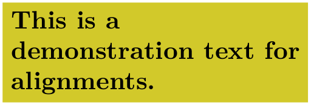
For alignment with line breaking, the same will happen; only the lines will now, additionally, be broken automatically:
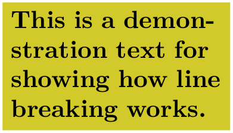
• align=flush left For alignment without line breaking this option has exactly the same effect as left. However, for alignment with line breaking, there is a difference: While left uses the original plain TeX definition of a ragged right border, in which TeX will try to balance the right border as well as possible, flush left causes the right border to be ragged in the LaTeX-style, in which no balancing occurs. This looks ugly, but it may be useful for very narrow boxes and when you wish to avoid hyphenations.
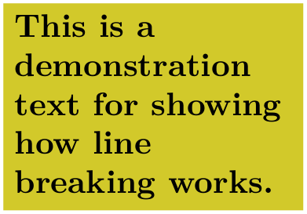
• align=right Works like left, only for right alignment.
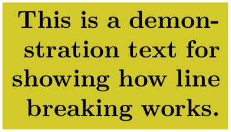
• align=flush right Works like flush left, only for right alignment.
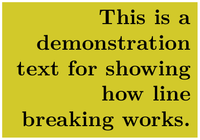
• align=center Works like left or right, only for centered alignment.
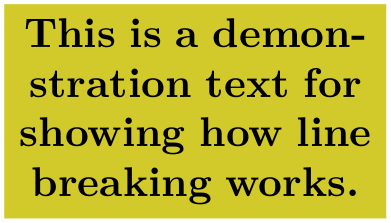
There is one annoying problem with the center alignment (but not with flush center and the other options): If you specify a large line width and the node text fits on a single line and is, in fact, much shorter than the specified text width, an underfull horizontal box will result. Unfortunately, this cannot be avoided, due to the way TeX works (more precisely, I have thought long and hard about this and have not been able to figure out a sensible way to avoid this). For this reason, TikZ switches off horizontal badness warnings inside boxes with align=center. Since this will also suppress some “wanted” warnings, there is also an option for switching the warnings on once more:
/tikz/badness warnings for centered text=⟨true or false⟩ (no default, initially false) ¶
If set to true, normal badness warnings will be issued for centered boxes. Note that you may get annoying warnings for perfectly normal boxes, namely whenever the box is very large and the contents is not long enough to fill the box sufficiently.
• align=flush center Works like flush left or flush right, only for center alignment. Because of all the trouble that results from the center option in conjunction with narrow lines, I suggest picking this option rather than center unless you have longer text, in which case center will give the typographically better results.
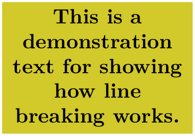
• align=justify For alignment without line breaking, this has the same effect as left. For alignment with line breaking, this causes the text to be “justified”. Use this only with rather broad nodes.
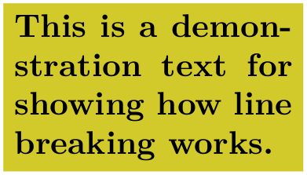
In the above example, TeX complains (rightfully) about three very badly typeset lines. (For this manual I asked TeX to stop complaining by using \hbadness=10000, but this is a foul deed, indeed.)
• align=none Disables all alignments and \\ will not be redefined.
/tikz/node halign header=⟨macro storing a header⟩ (no default, initially empty) ¶
This is the key that is used by align internally for alignment without line breaking. Read the following only if you are familiar with the \halign command.
This key only has an effect if text width is empty, otherwise it is ignored. Furthermore, if ⟨macro storing a header⟩ is empty, then this key also has no effect. So, suppose text width is empty, but ⟨header⟩ is not. In this case the following happens:
When the node text is parsed, the command \\ is redefined internally. This redefinition is done in such a way that the text from the start of the node to the first occurrence of \\ is put in an \hbox. Then the text following \\ up to the next \\ is put in another \hbox. This goes on until the text between the last \\ and the closing } is also put in an \hbox.
The ⟨macro storing a header⟩ should be a macro that contains some text suitable for use as a header for the \halign command. For instance, you might define
\def\myheader{\hfil\hfil##\hfil\cr}
\tikz [node halign header=\myheader] ...
You cannot just say node halign header=\hfil\hfil#\hfil\cr because this confuses TeX inside matrices, so this detour via a macro is needed.
Next, conceptually, all these boxes are recursively put inside an \halign command. Assuming that ⟨first⟩ is the first of the above boxes, the command \halign{⟨header⟩ \box⟨first⟩ \cr} is used to create a new box, which we will call the ⟨previous box⟩. Then, the following box is created, where ⟨second⟩ is the second input box: \halign{⟨header⟩ \box⟨previous box⟩ \cr \box⟨second⟩\cr}. Let us call the resulting box the ⟨previous box⟩ once more. Then the next box that is created is \halign{⟨header⟩ \box⟨previous box⟩ \cr \box⟨third⟩\cr}.
All of this means that if ⟨header⟩ is an \halign header like \hfil#\hfil\cr, then all boxes will be centered relative to one another. Similarly, a ⟨header⟩ of \hfil#\cr causes the text to be flushed right.
Note that this mechanism is not flexible enough to all multiple columns inside ⟨header⟩. You will have to use a tabular or a matrix in such cases.
One further note: Since the text of each line is placed in a box, settings will be local to each “line”. This is very similar to the way a cell in a tabular or a matrix behaves.
17.4.4 Text Parameters: Height and Depth of Text¶
In addition to changing the width of nodes, you can also change the height of nodes. This can be done in two ways: First, you can use the option minimum height, which ensures that the height of the whole node is at least the given height (this option is described in more detail later). Second, you can use the option text height, which sets the height of the text itself, more precisely, of the TeX text box of the text. Note that the text height typically is not the height of the shape’s box: In addition to the text height, an internal inner sep is added as extra space and the text depth is also taken into account.
I recommend using minimum size instead of text height except for special situations.
/tikz/text height=⟨dimension⟩(no default) ¶
Sets the height of the text boxes in shapes. Thus, when you write something like node {text}, the text is first typeset, resulting in some box of a certain height. This height is then replaced by the height text height. The resulting box is then used to determine the size of the shape, which will typically be larger. When you write text height= without specifying anything, the “natural” size of the text box remains unchanged.

/tikz/text depth=⟨dimension⟩(no default) ¶
This option works like text height, only for the depth of the text box. This option is mostly useful when you need to ensure a uniform depth of text boxes that need to be aligned.
17.5 Positioning Nodes¶
When you place a node at some coordinate, the node is centered on this coordinate by default. This is often undesirable and it would be better to have the node to the right or above the actual coordinate.
17.5.1 Positioning Nodes Using Anchors¶
pgf uses a so-called anchoring mechanism to give you a very fine control over the placement. The idea is simple: Imagine a node of rectangular shape of a certain size. pgf defines numerous anchor positions in the shape. For example to upper right corner is called, well, not “upper right anchor”, but the north east anchor of the shape. The center of the shape has an anchor called center on top of it, and so on. Here are some examples (a complete list is given in Section 17.2.2).
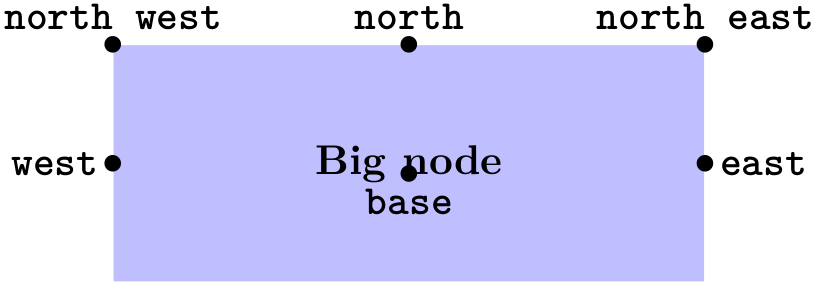
Now, when you place a node at a certain coordinate, you can ask TikZ to place the node shifted around in such a way that a certain anchor is at the coordinate. In the following example, we ask TikZ to shift the first node such that its north east anchor is at coordinate (0,0) and that the west anchor of the second node is at coordinate (1,1).
Since the default anchor is center, the default behavior is to shift the node in such a way that it is centered on the current position.
/tikz/anchor=⟨anchor name⟩(no default)
Causes the node to be shifted such that its anchor ⟨anchor name⟩ lies on the current coordinate.
The only anchor that is present in all shapes is center. However, most shapes will at least define anchors in all “compass directions”. Furthermore, the standard shapes also define a base anchor, as well as base west and base east, for placing things on the baseline of the text.
The standard shapes also define a mid anchor (and mid west and mid east). This anchor is half the height of the character “x” above the base line. This anchor is useful for vertically centering multiple nodes that have different heights and depth. Here is an example:
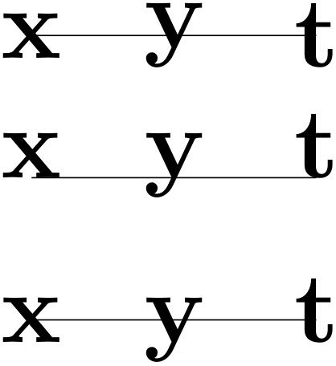
\begin{tikzpicture}[scale=3,transform shape]
% First, center alignment -> wobbles
\draw[anchor=center] (0,1) node{x} --
(0.5,1) node{y} --
(1,1) node{t};
% Second, base alignment -> no wobble, but too
high
\draw[anchor=base] (0,.5) node{x} --
(0.5,.5) node{y} --
(1,.5) node{t};
% Third, mid alignment
\draw[anchor=mid] (0,0) node{x} --
(0.5,0) node{y} --
(1,0) node{t};
\end{tikzpicture}
17.5.2 Basic Placement Options¶
Unfortunately, while perfectly logical, it is often rather counter-intuitive that in order to place a node above a given point, you need to specify the south anchor. For this reason, there are some useful options that allow you to select the standard anchors more intuitively:
/tikz/above=⟨offset⟩ (default 0pt) ¶
Does the same as anchor=south. If the ⟨offset⟩ is specified, the node is additionally shifted upwards by the given ⟨offset⟩.
/tikz/below=⟨offset⟩ (default 0pt) ¶
Similar to above.
/tikz/left=⟨offset⟩ (default 0pt) ¶
Similar to above.
/tikz/right=⟨offset⟩ (default 0pt) ¶
Similar to above.
/tikz/above left(no value) ¶
Does the same as anchor=south east. Note that giving both above and left options does not have the same effect as above left, rather only the last left “wins”. Actually, this option also takes an ⟨offset⟩ parameter, but using this parameter without using the positioning library is deprecated. (The positioning library changes the meaning of this parameter to something more sensible.)
/tikz/below left(no value) ¶
Similar to above left.
/tikz/below right(no value) ¶
Similar to above left.
/tikz/centered(no value) ¶
A shorthand for anchor=center.
17.5.3 Advanced Placement Options¶
While the standard placement options suffice for simple cases, the positioning library offers more convenient placement options.
TikZ Library positioning ¶
\usetikzlibrary{positioning} %
LaTeX
and plain
TeX
\usetikzlibrary[positioning] % ConTeXt
The library defines additional options for placing nodes
conveniently. It also redefines the standard options like
above so that they give you better
control of node placement.
When this library is loaded, the options like above or above left behave differently.
/tikz/above=⟨specification⟩ (default 0pt)
With the positioning library loaded, the above option does not take a simple ⟨dimension⟩ as its parameter. Rather, it can (also) take a more elaborate ⟨specification⟩ as parameter. This ⟨specification⟩ has the following general form: It starts with an optional ⟨shifting part⟩ and is followed by an optional ⟨of-part⟩. Let us start with the ⟨shifting part⟩, which can have three forms:
1. It can simply be a ⟨dimension⟩ (or a mathematical expression that evaluates to a dimension) like 2cm or 3cm/2+4cm. In this case, the following happens: the node’s anchor is set to south and the node is vertically shifted upwards by ⟨dimension⟩.
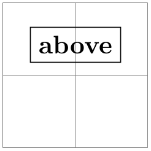
\begin{tikzpicture}
\draw[help lines] (0,0) grid
(2,2);
\node at
(1,1) [above=2pt+3pt,draw] {above};
\end{tikzpicture}
This use of the above option is the same as if the positioning library were not loaded.
2. It can be a ⟨number⟩ (that is, any mathematical expression that does not include a unit like pt or cm). Examples are 2 or 3+sin(60). In this case, the anchor is also set to south and the node is vertically shifted by the vertical component of the coordinate (0,⟨number⟩).
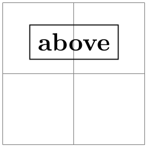
\begin{tikzpicture}
\draw[help lines] (0,0) grid
(2,2);
\node at
(1,1) [above=.2,draw] {above};
% south border of the node is now 2mm above (1,1)
\end{tikzpicture}
3. It can be of the form ⟨number or dimension 1⟩ and ⟨number or dimension 2⟩. This specification does not make particular sense for the above option, it is much more useful for options like above left. The reason it is allowed for the above option is that it is sometimes automatically used, as explained later.
The effect of this option is the following. First, the point (⟨number or dimension 2⟩,⟨number or dimension 1⟩) is computed (note the inverted order), using the normal rules for evaluating such a coordinate, yielding some position. Then, the node is shifted by the vertical component of this point. The anchor is set to south.

\usetikzlibrary {positioning}
\begin{tikzpicture}
\draw[help lines] (0,0) grid
(2,2);
\node at
(1,1) [above=.2 and 3mm,draw] {above};
% south border of the node is also 2mm above (1,1)
\end{tikzpicture}
The ⟨shifting part⟩ can optionally be followed by a ⟨of-part⟩, which has one of the following forms:
1. The ⟨of-part⟩ can be of ⟨coordinate⟩, where ⟨coordinate⟩ is not in parentheses and it is not just a node name. An example would be of somenode.north or of {2,3}. In this case, the following happens: First, the node’s at parameter is set to the ⟨coordinate⟩. Second, the node is shifted according to the ⟨shift-part⟩. Third, the anchor is set to south.
Here is a basic example:
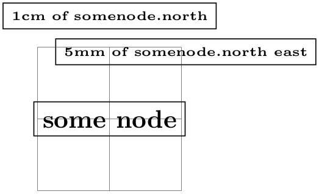
\usetikzlibrary {positioning}
\begin{tikzpicture}[every node/.style=draw]
\draw[help lines] (0,0) grid
(2,2);
\node (somenode) at
(1,1) {some
node};
\node [above=5mm of somenode.north
east] {\tiny 5mm
of
somenode.north
east};
\node [above=1cm
of
somenode.north] {\tiny 1cm
of
somenode.north};
\end{tikzpicture}
As can be seen the above=5mm of somenode.north east option does, indeed, place the node 5mm above the north east anchor of somenode. The same effect could have been achieved writing above=5mm followed by at=(somenode.north east).
If the ⟨shifting-part⟩ is missing, the shift is not zero, but rather the value of the node distance key is used, see below.
2. The ⟨of-part⟩ can be of ⟨node name⟩. An example would be of somenode. In this case, the following usually happens:
• The anchor is set to south.
• The node is shifted according to the ⟨shifting part⟩ or, if it is missing, according to the value of node distance.
• The node’s at parameter is set to ⟨node name⟩.north.
The net effect of all this is that the new node will be placed in such a way that the distance between its south border and ⟨node name⟩’s north border is exactly the given distance.
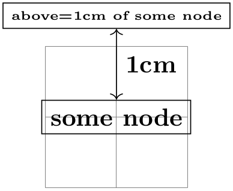
\usetikzlibrary {positioning}
\begin{tikzpicture}[every node/.style=draw]
\draw[help lines] (0,0) grid
(2,2);
\node (some node) at
(1,1) {some
node};
\node (other node) [above=1cm of
some
node] {\tiny above=1cm
of
some
node};
\draw [<->] (some node.north) --
(other node.south)
node
[midway,right,draw=none] {1cm};
\end{tikzpicture}
It is possible to change the behavior of this ⟨specification⟩ rather drastically, using the following key:
/tikz/on grid=⟨boolean⟩ (no default, initially false) ¶
When this key is set to true, an ⟨of-part⟩ of the current form behaves differently: The anchors set for the current node as well as the anchor used for the other ⟨node name⟩ are set to center.
This has the following effect: When you say above=1cm of somenode with on grid set to true, the new node will be placed in such a way that its center is 1cm above the center of somenode. Repeatedly placing nodes in this way will result in nodes that are centered on “grid coordinate”, hence the name of the option.
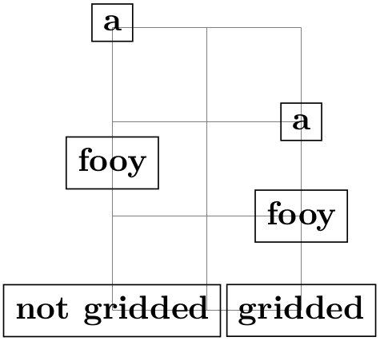
\usetikzlibrary {positioning}
\begin{tikzpicture}[every node/.style=draw]
\draw[help lines] (0,0) grid
(2,3);
% Not gridded
\node (a1) at
(0,0) {not
gridded};
\node (b1) [above=1cm of a1] {fooy};
\node (c1) [above=1cm of b1] {a};
% gridded
\node (a2) at
(2,0) {gridded};
\node (b2) [on grid,above=1cm of a2] {fooy};
\node (c2) [on grid,above=1cm of b2] {a};
\end{tikzpicture}
/tikz/node distance=⟨shifting part⟩ (no default, initially 1cm and 1cm) ¶
The value of this key is used as ⟨shifting part⟩ is used if and only if a ⟨of-part⟩ is present, but no ⟨shifting part⟩.
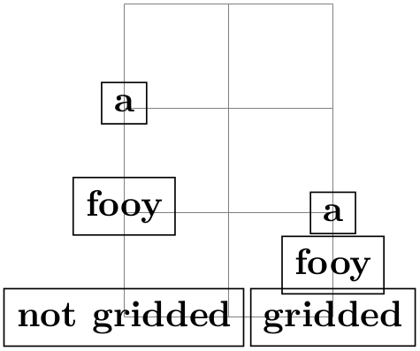
\usetikzlibrary {positioning}
\begin{tikzpicture}[every node/.style=draw,node distance=5mm]
\draw[help lines] (0,0) grid
(2,3);
% Not gridded
\node (a1) at
(0,0) {not
gridded};
\node (b1) [above=of a1] {fooy};
\node (c1) [above=of b1] {a};
% gridded
\begin{scope}[on grid]
\node (a2) at
(2,0) {gridded};
\node (b2) [above=of a2] {fooy};
\node (c2) [above=of b2] {a};
\end{scope}
\end{tikzpicture}
/tikz/below=⟨specification⟩(no default)
This key is redefined in the same manner as above.
/tikz/left=⟨specification⟩(no default)
This key is redefined in the same manner as above, only all vertical shifts are replaced by horizontal shifts.
/tikz/right=⟨specification⟩(no default)
This key is redefined in the same manner as left.
/tikz/above left=⟨specification⟩(no default)
This key is also redefined in a manner similar to the above, but behavior of the ⟨shifting part⟩ is more complicated:
1. When the ⟨shifting part⟩ is of the form ⟨number or dimension⟩ and ⟨number or dimension⟩, it has (essentially) the effect of shifting the node vertically upwards by the first ⟨number or dimension⟩ and to the left by the second. To be more precise, the coordinate (⟨second number or dimension⟩,⟨first number or dimension⟩) is computed and then the node is shifted vertically by the \(y\)-part of the resulting coordinate and horizontally be the negated \(x\)-part of the result. (This is exactly what you expect, except possibly when you have used the x and y options to modify the xy-coordinate system so that the unit vectors no longer point in the expected directions.)
2. When the ⟨shifting part⟩ is of the form ⟨number or dimension⟩, the node is shifted by this ⟨number or dimension⟩ in the direction of \(135^\circ \). This means that there is a difference between a ⟨shifting part⟩ of 1cm and of 1cm and 1cm: In the second case, the node is shifted by 1cm upward and 1cm to the left; in the first case it is shifted by \(\frac {1}{2}\sqrt {2}\)cm upward and by the same amount to the left. A more mathematical way of phrasing this is the following: A plain ⟨dimension⟩ is measured in the \(l_2\)-norm, while a ⟨dimension⟩ and ⟨dimension⟩ is measured in the \(l_1\)-norm.
The following example should help to illustrate the difference:
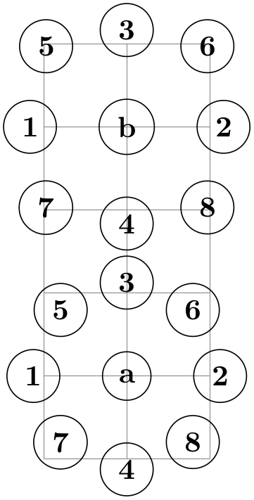
\usetikzlibrary {positioning}
\begin{tikzpicture}[every node/.style={draw,circle}]
\draw[help lines] (0,0) grid
(2,5);
\begin{scope}[node distance=5mm and 5mm]
\node (b) at
(1,4) {b};
\node [left=of b] {1}; \node [right=of b] {2};
\node [above=of b] {3}; \node [below=of b] {4};
\node [above left=of b] {5}; \node [above right=of b] {6};
\node [below left=of b] {7}; \node [below right=of b] {8};
\end{scope}
\begin{scope}[node distance=5mm]
\node (a) at
(1,1) {a};
\node [left=of a] {1}; \node [right=of a] {2};
\node [above=of a] {3}; \node [below=of a] {4};
\node [above left=of a] {5}; \node [above right=of a] {6};
\node [below left=of a] {7}; \node [below right=of a] {8};
\end{scope}
\end{tikzpicture}
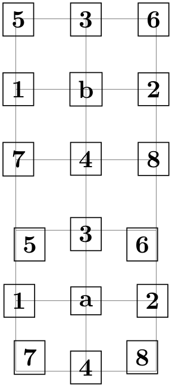
\usetikzlibrary {positioning}
\begin{tikzpicture}[every node/.style={draw,rectangle}]
\draw[help lines] (0,0) grid
(2,5);
\begin{scope}[node distance=5mm and 5mm]
\node (b) at
(1,4) {b};
\node [left=of b] {1}; \node [right=of b] {2};
\node [above=of b] {3}; \node [below=of b] {4};
\node [above left=of b] {5}; \node [above right=of b] {6};
\node [below left=of b] {7}; \node [below right=of b] {8};
\end{scope}
\begin{scope}[node distance=5mm]
\node (a) at
(1,1) {a};
\node [left=of a] {1}; \node [right=of a] {2};
\node [above=of a] {3}; \node [below=of a] {4};
\node [above left=of a] {5}; \node [above right=of a] {6};
\node [below left=of a] {7}; \node [below right=of a] {8};
\end{scope}
\end{tikzpicture}

\usetikzlibrary {positioning}
\begin{tikzpicture}[every node/.style={draw,rectangle},on grid]
\draw[help lines] (0,0) grid
(4,4);
\begin{scope}[node distance=1]
\node (a) at
(2,3) {a};
\node [left=of a] {1}; \node [right=of a] {2};
\node [above=of a] {3}; \node [below=of a] {4};
\node [above left=of a] {5}; \node [above right=of a] {6};
\node [below left=of a] {7}; \node [below right=of a] {8};
\end{scope}
\begin{scope}[node distance=1 and 1]
\node (b) at
(2,0) {b};
\node [left=of b] {1}; \node [right=of b] {2};
\node [above=of b] {3}; \node [below=of b] {4};
\node [above left=of b] {5}; \node [above right=of b] {6};
\node [below left=of b] {7}; \node [below right=of b] {8};
\end{scope}
\end{tikzpicture}
/tikz/below left=⟨specification⟩(no default)
Works similar to above left.
/tikz/above right=⟨specification⟩(no default)
Works similar to above left.
/tikz/below right=⟨specification⟩(no default)
Works similar to above left.
The positioning package also introduces the following new placement keys:
/tikz/base left=⟨specification⟩(no default) ¶
This key works like the left key, only instead of the east anchor, the base east anchor is used and, when the second form of an ⟨of-part⟩ is used, the corresponding base west anchor.
This key is useful for chaining together nodes so that their base lines are aligned.
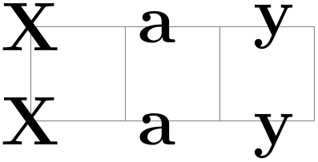
\usetikzlibrary {positioning}
\begin{tikzpicture}[node distance=1ex]
\draw[help lines] (0,0) grid
(3,1);
\huge
\node (X) at
(0,1) {X};
\node (a) [right=of X] {a};
\node (y) [right=of a] {y};
\node (X) at
(0,0) {X};
\node (a) [base right=of X] {a};
\node (y) [base right=of a] {y};
\end{tikzpicture}
/tikz/base right=⟨specification⟩(no default) ¶
Works like base left.
/tikz/mid left=⟨specification⟩(no default) ¶
Works like base left, but with mid east and mid west anchors instead of base east and base west.
/tikz/mid right=⟨specification⟩(no default) ¶
Works like mid left.
17.5.4 Advanced Arrangements of Nodes¶
The simple above and right options may not always suffice for arranging a large number of nodes. For such situations TikZ offers libraries that make positioning easier: The matrix library and the graphdrawing library. These libraries for positioning nodes are described in two separate Sections 20 and 27.
17.6 Fitting Nodes to a Set of Coordinates¶
It is sometimes desirable that the size and position of a node is not given using anchors and size parameters, rather one would sometimes have a box be placed and be sized such that it “is just large enough to contain this, that, and that point”. This situation typically arises when a picture has been drawn and, afterwards, parts of the picture are supposed to be encircled or highlighted.
In this situation the fit option from the fit library is useful, see Section 54 for the details. The idea is that you may give the fit option to a node. The fit option expects a list of coordinates (one after the other without commas) as its parameter. The effect will be that the node’s text area has exactly the necessary size so that it contains all the given coordinates. Here is an example:
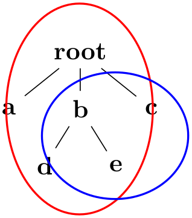
\usetikzlibrary {fit,shapes.geometric}
\begin{tikzpicture}[level distance=8mm]
\node (root) {root}
child
{ node
(a) {a} }
child
{ node
(b) {b}
child
{ node
(d) {d} }
child
{ node
(e) {e} } }
child
{ node
(c) {c} };
\node[draw=red,inner sep=0pt,thick,ellipse,fit=(root) (b) (d) (e)] {};
\node[draw=blue,inner sep=0pt,thick,ellipse,fit=(b) (c) (e)] {};
\end{tikzpicture}
If you want to fill the fitted node you will usually have to place it on a background layer.
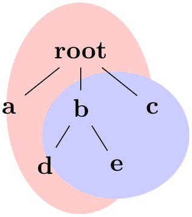
\usetikzlibrary {backgrounds,fit,shapes.geometric}
\begin{tikzpicture}[level distance=8mm]
\node (root) {root}
child
{ node
(a) {a} }
child
{ node
(b) {b}
child
{ node
(d) {d} }
child
{ node
(e) {e} } }
child
{ node
(c) {c} };
\begin{scope}[on background layer]
\node[fill=red!20,inner sep=0pt,ellipse,fit=(root) (b) (d) (e)] {};
\node[fill=blue!20,inner sep=0pt,ellipse,fit=(b) (c) (e)] {};
\end{scope}
\end{tikzpicture}
17.7 Transformations¶
It is possible to transform nodes, but, by default, transformations do not apply to nodes. The reason is that you usually do not want your text to be scaled or rotated even if the main graphic is transformed. Scaling text is evil, rotating slightly less so.
However, sometimes you do wish to transform a node, for example, it certainly sometimes makes sense to rotate a node by 90 degrees. There are two ways to achieve this:
-
1. You can use the following option:
/tikz/transform shape(no value) ¶
Causes the current “external” transformation matrix to be applied to the shape. For example, if you said \tikz[scale=3] and then say node[transform shape] {X}, you will get a “huge” X in your graphic.
-
2. You can give transformation options inside the option list of the node. These transformations always apply to the node.
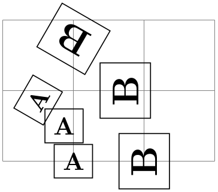
\usepgfmodule {nonlineartransformations}\usetikzlibrary {curvilinear}
\begin{ tikzpicture}[ every node/ .style={ draw}]
\draw[ help lines](0,0) grid (3,2);
\draw (1,0) node{A}
(2,0) node[ rotate=90, scale=1.5] {B};
\draw[ rotate=30] (1,0) node{A}
(2,0) node[ rotate=90, scale=1.5] {B};
\draw[ rotate=60] (1,0) node[ transform shape] {A}
(2,0) node[ transform shape, rotate=90, scale=1.5] {B};
\end{ tikzpicture}
Even though TikZ currently does not allow you to configure so-called nonlinear transformations, see Section 107.4, there is an option that influences how nodes are transformed when nonlinear transformations are in force:
/tikz/transform shape nonlinear=⟨true or false⟩ (no default, initially false) ¶
When set to true, TikZ will try to apply any current nonlinear transformation also to nodes. Typically, for the text in nodes this is not possible in general, in such cases a linear approximation of the nonlinear transformation is used. For more details, see Section 107.4.
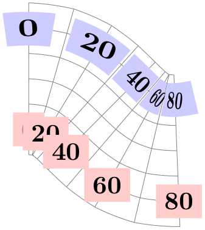
\usepgfmodule {nonlineartransformations}\usetikzlibrary
{curvilinear}
\begin{tikzpicture}
% Install a nonlinear transformation:
\pgfsetcurvilinearbeziercurve
{\pgfpoint{0mm}{20mm}}
{\pgfpoint{10mm}{20mm}}
{\pgfpoint{10mm}{10mm}}
{\pgfpoint{20mm}{10mm}}
\pgftransformnonlinear{\pgfpointcurvilinearbezierorthogonal\pgf@x\pgf@y}%
% Draw something:
\draw [help lines] (0,-30pt) grid
[step=10pt] (80pt,30pt);
\foreach \x in
{0,20,...,80}
\node [fill=red!20] at
(\x pt, -20pt) {\x};
\foreach \x in
{0,20,...,80}
\node [fill=blue!20, transform shape nonlinear] at
(\x pt, 20pt) {\x};
\end{tikzpicture}
17.8 Placing Nodes on a Line or Curve Explicitly¶
Until now, we always placed nodes on a coordinate that is mentioned in the path. Often, however, we wish to place nodes on “the middle” of a line and we do not wish to compute these coordinates “by hand”. To facilitate such placements, TikZ allows you to specify that a certain node should be somewhere “on” a line. There are two ways of specifying this: Either explicitly by using the pos option or implicitly by placing the node “inside” a path operation. These two ways are described in the following.
/tikz/pos=⟨fraction⟩(no default) ¶
When this option is given, the node is not anchored on the last coordinate. Rather, it is anchored on some point on the line from the previous coordinate to the current point. The ⟨fraction⟩ dictates how “far” on the line the point should be. A ⟨fraction⟩ of 0 is the previous coordinate, 1 is the current one, everything else is in between. In particular, 0.5 is the middle.
Now, what is “the previous line”? This depends on the previous path construction operation.
In the simplest case, the previous path operation was a “line-to” operation, that is, a --⟨coordinate⟩ operation:
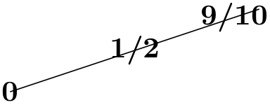
For the arc operation, the position is simply the corresponding position on the arc:
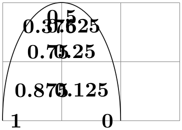
The next case is the curve-to operation (the .. operation). In this case, the “middle” of the curve, that is, the position 0.5 is not necessarily the point at the exact half distance on the line. Rather, it is some point at “time” 0.5 of a point traveling from the start of the curve, where it is at time 0, to the end of the curve, which it reaches at time 0.5. The “speed” of the point depends on the length of the support vectors (the vectors that connect the start and end points to the control points). The exact math is a bit complicated (depending on your point of view, of course); you may wish to consult a good book on computer graphics and Bézier curves if you are intrigued.
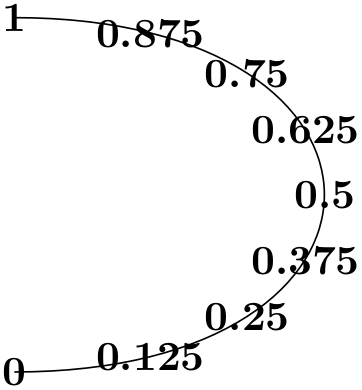
Another interesting case are the horizontal/vertical line-to operations |- and -|. For them, the position (or time) 0.5 is exactly the corner point.
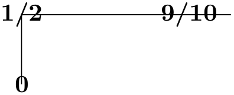
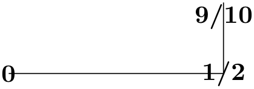
For all other path construction operations, the position placement does not work, currently.
/tikz/auto=⟨direction⟩ (default is scope’s setting) ¶
This option causes an anchor position to be calculated automatically according to the following rule. Consider a line between two points. If the ⟨direction⟩ is left, then the anchor is chosen such that the node is to the left of this line. If the ⟨direction⟩ is right, then the node is to the right of this line. Leaving out ⟨direction⟩ causes automatic placement to be enabled with the last value of left or right used. A ⟨direction⟩ of false disables automatic placement. This happens also whenever an anchor is given explicitly by the anchor option or by one of the above, below, etc. options.
This option only has an effect for nodes that are placed on lines or curves.
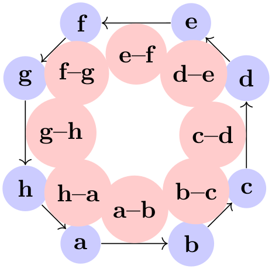
\begin{tikzpicture}
[scale=.8,auto=left,every node/.style={circle,fill=blue!20}]
\node (a) at
(-1,-2) {a};
\node (b) at
( 1,-2) {b};
\node (c) at
( 2,-1) {c};
\node (d) at
( 2, 1) {d};
\node (e) at
( 1, 2) {e};
\node (f) at
(-1, 2) {f};
\node (g) at
(-2, 1) {g};
\node (h) at
(-2,-1) {h};
\foreach \from/\to in
{a/b,b/c,c/d,d/e,e/f,f/g,g/h,h/a}
\draw [->] (\from) --
(\to)
node[midway,fill=red!20] {\from--\to};
\end{tikzpicture}
/tikz/swap(no value) ¶
This option exchanges the roles of left and right in automatic placement. That is, if left is the current auto placement, right is set instead and the other way round.
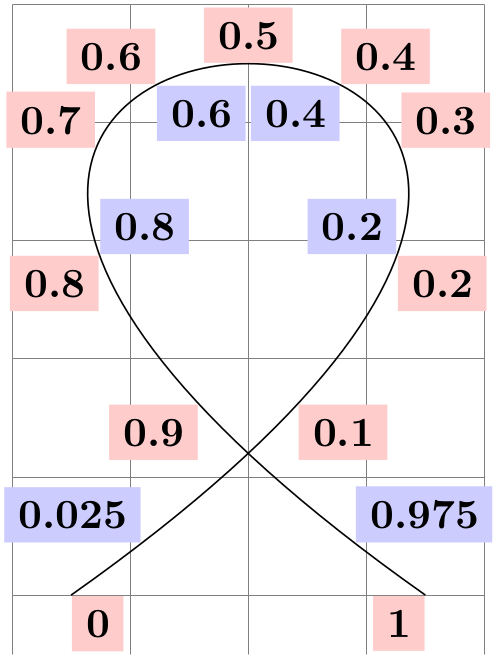
\usetikzlibrary {automata}
\begin{tikzpicture}[auto]
\draw[help lines,use as bounding box] (0,-.5) grid
(4,5);
\draw (0.5,0) .. controls
(9,6) and
(-5,6) .. (3.5,0)
node
foreach
\pos in
{0,0.1,0.2,0.3,0.4,0.5,0.6,0.7,0.8,0.9,1}
[pos=\pos,swap,fill=red!20] {\pos}
node
foreach
\pos in
{0.025,0.2,0.4,0.6,0.8,0.975}
[pos=\pos,fill=blue!20] {\pos};
\end{tikzpicture}
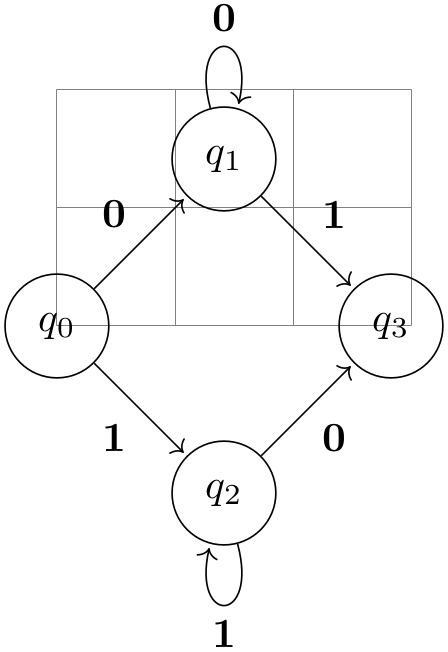
\usetikzlibrary {automata}
\begin{tikzpicture}[shorten >=1pt,node distance=2cm,auto]
\draw[help lines] (0,0) grid
(3,2);
\node[state] (q_0) {$q_0$};
\node[state] (q_1) [above right of=q_0] {$q_1$};
\node[state] (q_2) [below right of=q_0] {$q_2$};
\node[state] (q_3) [below right of=q_1] {$q_3$};
\path[->] (q_0) edge
node
{0} (q_1)
edge
node
[swap] {1} (q_2)
(q_1) edge
node
{1} (q_3)
edge
[loop above] node
{0} ()
(q_2) edge
node
[swap] {0} (q_3)
edge
[loop below] node
{1} ();
\end{tikzpicture}
/tikz/'(no value) ¶
This is a very short alias for swap.
/tikz/sloped(no value) ¶
This option causes the node to be rotated such that a horizontal line becomes a tangent to the curve. The rotation is normally done in such a way that text is never “upside down”. To get upside-down text, use can use [rotate=180] or [allow upside down], see below.
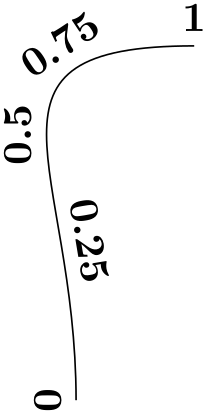
/tikz/allow upside down=⟨boolean⟩ (default true, initially false) ¶
If set to true, TikZ will not “righten” upside down text.
There exist styles for specifying positions a bit less “technically”:
/tikz/midway(style, no value) ¶
This has the same effect as pos=0.5.

\tikz \draw (0,0) .. controls
+(up:2cm) and
+(left:3cm) .. (1,5)
node[at end] {\texttt{at
end}}
node[very near end] {\texttt{very
near
end}}
node[near end] {\texttt{near
end}}
node[midway] {\texttt{midway}}
node[near start] {\texttt{near
start}}
node[very near start] {\texttt{very
near
start}}
node[at start] {\texttt{at
start}};
/tikz/near start(style, no value) ¶
Set to pos=0.25.
/tikz/near end(style, no value) ¶
Set to pos=0.75.
/tikz/very near start(style, no value) ¶
Set to pos=0.125.
/tikz/very near end(style, no value) ¶
Set to pos=0.875.
/tikz/at start(style, no value) ¶
Set to pos=0.
/tikz/at end(style, no value) ¶
Set to pos=1.
17.9 Placing Nodes on a Line or Curve Implicitly¶
When you wish to place a node on the line (0,0) -- (1,1), it is natural to specify the node not following the (1,1), but “somewhere in the middle”. This is, indeed, possible and you can write (0,0) -- node{a} (1,1) to place a node midway between (0,0) and (1,1).
What happens is the following: The syntax of the line-to path operation is actually -- node⟨node specification⟩⟨coordinate⟩. (It is even possible to give multiple nodes in this way.) When the optional node is encountered, that is, when the -- is directly followed by node, then the specification(s) are read and “stored away”. Then, after the ⟨coordinate⟩ has finally been reached, they are inserted again, but with the pos option set.
There are two things to note about this: When a node specification is “stored”, its catcodes become fixed. This means that you cannot use overly complicated verbatim text in them. If you really need, say, a verbatim text, you will have to put it in a normal node following the coordinate and add the pos option.
Second, which pos is chosen for the node? The position is inherited from the surrounding scope. However, this holds only for nodes specified in this implicit way. Thus, if you add the option [near end] to a scope, this does not mean that all nodes given in this scope will be put on near the end of lines. Only the nodes for which an implicit pos is added will be placed near the end. Typically, this is what you want. Here are some examples that should make this clearer:
Like the line-to operation, the curve-to operation .. also allows you to specify nodes “inside” the operation. After both the first .. and also after the second .. you can place node specifications. Like for the -- operation, these will be collected and then reinserted after the operation with the pos option set.
17.10 The Label and Pin Options¶
17.10.1 Overview¶
In addition to the node path operation, the two options label and pin can be used to “add a node next to another node”. As an example, suppose we want to draw a graph in which the nodes are small circles:
Now, in the above example, suppose we wish to indicate that the first node is the start node and the last node is the target node. We could write \node (s) {$s$};, but this would enlarge the first node. Rather, we want the “\(s\)” to be placed next to the node. For this, we need to create another node, but next to the existing node. The label and pin option allow us to do exactly this without having to use the cumbersome node syntax:
17.10.2 The Label Option¶
/tikz/label=[⟨options⟩]⟨angle⟩:⟨text⟩(no default) ¶
When this option is given to a node operation, it causes another node to be added to the path after the current node has been finished. This extra node will have the text ⟨text⟩. It is placed, in principle, in the direction ⟨angle⟩ relative to the main node, but the exact rules are a bit complex. Suppose the node currently under construction is called main node and let us call the label node label node. Then the following happens:
1. The ⟨angle⟩ is used to determine a position on the border of the main node. If the ⟨angle⟩ is missing, the value of the following key is used instead:
/tikz/label position=⟨angle⟩ (no default, initially above) ¶
Sets the default position for labels.
The ⟨angle⟩ determines the position on the border of the shape in two different ways. Normally, the border position is given by main node.⟨angle⟩. This means that the ⟨angle⟩ can either be a number like 0 or -340, but it can also be an anchor like north. Additionally, the special angles above, below, left, right, above left, and so on are automatically replaced by the corresponding angles 90, 270, 180, 0, 135, and so on.
A special case arises when the following key is set:
/tikz/absolute=⟨true or false⟩ (default true) ¶
When this key is set, the ⟨angle⟩ is interpreted differently: We still use a point on the border of the main node, but the angle is measured “absolutely”, that is, an angle of 0 refers to the point on the border that lies on a straight line from the main node’s center to the right (relative to the paper, not relative to the local coordinate system of either the node or the scope).
The difference can be seen in the following example:
2. Then, an anchor point for the label node is computed. It is determined in such a way that the label node will “face away” from the border of the main node. The anchor that is chosen depends on the position of the border point that is chosen and its position relative to the center of the main node and on whether the transform shape option is set. In detail, when the computed border point is at \(0^\circ \), the anchor west will be used. Similarly, when the border point is at \(90^\circ \), the anchor south will be used, and so on for \(180^\circ \) and \(270^\circ \).
For angles between these “major” angles, like \(30^\circ \) or \(110^\circ \), combined anchors, like south west for \(30^\circ \) or south east for \(110^\circ \), are used. However, for angles close to the major angles, (differing by up to \(2^\circ \) from the major angle), the anchor for the major angle is used. Thus, a label at a border point for \(2^\circ \) will have the anchor west, while a label for \(3^\circ \) will have the anchor south west, resulting in a “jump” of the anchor. You can set the anchor “by hand” using the anchor key or indirect keys like left.
3. One ⟨angle⟩ is special: If you set the ⟨angle⟩ to center, then the label will be placed on the center of the main node. This is mainly useful for adding a label text to an existing node, especially if it has been rotated.
You can pass ⟨options⟩ to the node label node. For this, you provide the options in square brackets before the ⟨angle⟩. If you do so, you need to add braces around the whole argument of the label option and this is also the case if you have brackets or commas or semicolons or anything special in the ⟨text⟩.
If you provide multiple label options, then multiple extra label nodes are added in the order they are given.
The following styles influence how labels are drawn:
/tikz/label distance=⟨distance⟩ (no default, initially 0pt) ¶
The ⟨distance⟩ is additionally inserted between the main node and the label node.
/tikz/every label(style, initially empty) ¶
This style is used in every node created by the label option. The default is draw=none,fill=none.
See Section 17.10.4 for an easier syntax for specifying nodes.
17.10.3 The Pin Option¶
/tikz/pin=[⟨options⟩]⟨angle⟩:⟨text⟩(no default) ¶
This option is quite similar to the label option, but there is one difference: In addition to adding an extra node to the picture, it also adds an edge from this node to the main node. This causes the node to look like a pin that has been added to the main node:
The meaning of the ⟨options⟩ and the ⟨angle⟩ and the ⟨text⟩ is exactly the same as for the node option. Only, the options and styles the influence the way pins look are different:
/tikz/pin distance=⟨distance⟩ (no default, initially 3ex) ¶
This ⟨distance⟩ is used instead of the label distance for the distance between the main node and the label node.
/tikz/every pin(style, initially draw=none,fill=none) ¶
This style is used in every node created by the pin option.
/tikz/pin position=⟨angle⟩ (no default, initially above) ¶
The default pin position. Works like label position.
/tikz/every pin edge(style, initially help lines) ¶
This style is used in every edge created by the pin options.
/tikz/pin edge=⟨options⟩ (no default, initially empty) ¶
This option can be used to set the options that are to be used in the edge created by the pin option.
17.10.4 The Quotes Syntax¶
The label and pin options provide a syntax for creating nodes next to existing nodes, but this syntax is often a bit too verbose. By including the following library, you get access to an even more concise syntax:
TikZ Library quotes ¶
\usetikzlibrary{quotes} %
LaTeX
and plain
TeX
\usetikzlibrary[quotes] % ConTeXt
Enables the quotes syntax for labels, pins, edge nodes, and pic
texts.
Let us start with the basics of what this library does: Once loaded, inside the options of a node command, instead of the usual ⟨key⟩=⟨value⟩ pairs, you may also provide strings of the following form (the actual syntax is slightly more general, see the detailed descriptions later on):
"⟨text⟩"⟨options⟩
The ⟨options⟩ must be surrounded in curly braces when they contain a comma, otherwise the curly braces are optional. The ⟨options⟩ may be preceded by an optional space.
When a ⟨string⟩ of the above form is encountered inside the options of a node, then it is internally transformed to
label={[⟨options⟩]⟨text⟩}
Let us have a look at an example:

The above has the same effect as the following:
Here are further examples, one where no ⟨options⟩ are added to the label, one where a position is specified, and examples with more complicated options in curly braces:
Let us now have a more detailed look at what commands this library provides:
/tikz/quotes mean label(no value) ¶
When this option is used (which is the default when this library is loaded), then, as described above, inside the options of a node a special syntax check is done.
The syntax. For each string in the list of options it is tested whether it starts with a quotation mark (note that this will never happen for normal keys since the normal keys of TikZ do not start with quotation marks). When this happens, the ⟨string⟩ should not be a key–value pair, but, rather, must have the form:
"⟨text⟩"'⟨options⟩
(We will discuss the optional apostrophe in a moment. It is not really important for the current option, but only for edge labels, which are discussed later).
Transformation to a label option. When a ⟨string⟩ has the above form, it is treated (almost) as if you had written
label={[⟨options⟩]⟨text⟩}
instead. The “almost” refers to the following additional feature: In reality, before the ⟨options⟩ are executed inside the label command, the direction keys above, left, below right and so on are redefined so that above is a shorthand for label position=90 and similarly for the other keys. The net effect is that in order to specify the position of the ⟨text⟩ relative to the main node you can just put something like left or above right inside the ⟨options⟩:

Alternatively, you can also use ⟨direction⟩:⟨actual text⟩ as your ⟨text⟩. This works since the label command allows you to specify a direction at the beginning when it is separated by a colon:

Arguably, placing above or left behind the ⟨text⟩ seems more natural than having it inside the ⟨text⟩.
In addition to the above, before the ⟨options⟩ are executed, the following style is also executed:
/tikz/every label quotes(style, no value) ¶
Handling commas and colons inside the text. The ⟨text⟩ may not contain a comma, unless it is inside curly braces. The reason is that the key handler separates the total options of a node along the commas it finds. So, in order to have text containing a comma, just add curly braces around either the comma or just around the whole ⟨text⟩:
The same is true for a colon, only in this case you may need to surround specifically the colon by curly braces to stop the label option from interpreting everything before the colon as a direction:
The optional apostrophe. Following the closing quotation marks in a ⟨string⟩ there may (but need not) be a single quotation mark (an apostrophe), possibly surrounded by whitespaces. If it is present, it is simply added to the ⟨options⟩ as another option (and, indeed, a single apostrophe is a legal option in TikZ, it is a shorthand for swap):
| String | has the same effect as |
| "foo"' | "foo" {'} |
| "foo"' red | "foo" {',red} |
| "foo"'{red} | "foo" {',red} |
| "foo"{',red} | "foo" {',red} |
| "foo"{red,'} | "foo" {red,'} |
| "foo"{'red} | "foo" {'red} (illegal; there is no key 'red) |
| "foo" red' | "foo" {red'} (illegal; there is no key red') |
/tikz/quotes mean pin(no value) ¶
This option has exactly the same effect as quotes mean label, only instead of transforming quoted text to the label option, they get transformed to the pin option:
Instead of every label quotes, the following style is executed with each such pin:
/tikz/every pin quotes(style, no value) ¶
If instead of labels or pins you would like quoted strings to be interpreted in a different manner, you can also define your own handlers:
/tikz/node quotes mean=⟨replacement⟩(no default) ¶
This key allows you to define your own handler for quotes options. Inside the options of a node, whenever a key–value pair with the syntax
"⟨text⟩"'⟨options⟩
is encountered, the following happens: The above string gets replaced by ⟨replacement⟩ where inside the ⟨replacement⟩ the parameter #1 is ⟨text⟩ and #2 is ⟨options⟩. If the apostrophe is present (see also the discussion of quotes mean label), the ⟨options⟩ start with ',.
The ⟨replacement⟩ is then parsed normally as options (using \pgfkeys).
Here is an example, where the quotes are used to define labels that are automatically named according to the text:
Some further options provided by the quotes library concern labels next to edges rather than nodes and they are described in Section 17.12.2.
17.11 Connecting Nodes: Using Nodes as Coordinates¶
Once you have defined a node and given it a name, you can use this name to reference it. This can be done in two ways, see also Section 13.2.3. Suppose you have said \path(0,0) node(x) {Hello World!}; in order to define a node named x.
-
1. Once the node x has been defined, you can use (x.⟨anchor⟩) wherever you would normally use a normal coordinate. This will yield the position at which the given ⟨anchor⟩ is in the picture. Note that transformations do not apply to this coordinate, that is, (x.north) will be the northern anchor of x even if you have said scale=3 or xshift=4cm. This is usually what you would expect.
-
2. You can also just use (x) as a coordinate. In most cases, this gives the same coordinate as (x.center). Indeed, if the shape of x is coordinate, then (x) and (x.center) have exactly the same effect.
However, for most other shapes, some path construction operations like -- try to be “clever” when they are asked to draw a line from such a coordinate or to such a coordinate. When you say (x)--(1,1), the -- path operation will not draw a line from the center of x, but from the border of x in the direction going towards (1,1). Likewise, (1,1)--(x) will also have the line end on the border in the direction coming from (1,1).
If the specified coordinate is almost identical to the node center, for example (x)--(0,0), no line will be drawn and a warning message will be printed.
In addition to --, the curve-to path operation .. and the path operations -| and |- will also handle nodes without anchors correctly. Here is an example, see also Section 13.2.3:
\begin{ tikzpicture}
\path (0,0) node (x) {Hello World!}
(3,1) node[ circle, draw](y) {$\int_1^2 x \mathrm d x$};
\draw[ ->,blue] (x) -- (y);
\draw[ ->,red] (x) -| node[ near start, below] { label} (y);
\draw[ ->,orange] (x) .. controls +(up:1cm) and +( left:1cm) .. node[ above, sloped] { label} (y);
\end{ tikzpicture}
17.12 Connecting Nodes: Using the Edge Operation¶
17.12.1 Basic Syntax of the Edge Operation¶
The edge operation works like a to operation that is added after the main path has been drawn, much like a node is added after the main path has been drawn. This allows each edge to have a different appearance. As the node operation, an edge temporarily suspends the construction of the current path and a new path \(p\) is constructed. This new path \(p\) will be drawn after the main path has been drawn. Note that \(p\) can be totally different from the main path with respect to its options. Also note that if there are several edge and/or node operations in the main path, each creates its own path(s) and they are drawn in the order that they are encountered on the main path.
\path … edge[⟨options⟩] ⟨nodes⟩ (⟨coordinate⟩) …; ¶
The effect of the edge operation is that after the main path the following path is added to the picture:
\path[every edge,⟨options⟩] (\tikztostart) ⟨path⟩;
Here, ⟨path⟩ is the to path. Note that, unlike the path added by the to operation, the (\tikztostart) is added before the ⟨path⟩ (which is unnecessary for the to operation, since this coordinate is already part of the main path).
The \tikztostart is the last coordinate on the path just before the edge operation, just as for the node or to operations. However, there is one exception to this rule: If the edge operation is directly preceded by a node operation, then this just-declared node is the start coordinate (and not, as would normally be the case, the coordinate where this just-declared node is placed – a small, but subtle difference). In this regard, edge differs from both node and to.
If there are several edge operations in a row, the start coordinate is the same for all of them as their target coordinates are not, after all, part of the main path. The start coordinate is, thus, the coordinate preceding the first edge operation. This is similar to nodes insofar as the edge operation does not modify the current path at all. In particular, it does not change the last coordinate visited, see the following example:
A different way of specifying the above graph using the edge operation is the following:
As can be seen, the path of the edge operation inherits the options from the main path, but you can locally overrule them.

\begin{tikzpicture}
\node foreach
\name/\angle in
{a/0,b/90,c/180,d/270}
(\name) at
(\angle:1.5) {$\name$};
\path[->] (b) edge
node[above right] {$5$} (a)
edge
&#
class="textcolor" style="color:#800080" >(c)
edge
[-,dotted] node[below,sloped] {missing} (d)
(c) edge
&#
class="textcolor" style="color:#800080" >(a)
edge
&#
class="textcolor" style="color:#800080" >(d)
(d) edge
[red] node[above,sloped] {very}
node[below,sloped] {bad} (a);
\end{tikzpicture}
Instead of every to, the style every edge is installed at the beginning of the main path.
/tikz/every edge(style, initially draw) ¶
Executed for each edge.
\begin{tikzpicture}[every edge/.style={draw,dashed}]
\path (0,0) edge
(3,2);
\end{tikzpicture}
17.12.2 Nodes on Edges: Quotes Syntax¶
The standard way of specifying nodes that are placed “on” an edge (or on a to-path; all of the following is also true for to–paths) is to put node specifications after the edge keyword, but before the target coordinate. Another way is to use the edge node option and its friends. Yet another way is to use the quotes syntax.
The syntax is essentially the same as for labels added to nodes as described in Section 17.10.4 and you also need to load the quotes library.
In detail, when the quotes library is loaded, each time a key–value pair in a list of options passed to an edge or a to path command starts with ", the key–value pair must actually be a string of the following form:
"⟨text⟩"'⟨options⟩
This string is transformed into the following:
edge node=node [every edge quotes,⟨options⟩]{⟨text⟩}
As described in Section 17.10.4, the apostrophe becomes part of the ⟨options⟩, when present.
The following style is important for the placement of the labels:
/tikz/every edge quotes(style, initially auto) ¶
This style is auto by default, which causes labels specified using the quotes-syntax to be placed next to the edges. Unless the setting of auto has been changed, they will be placed to the left.
In order to place all labels to the right by default, change this style to auto=right:
To place all nodes “on” the edge, just make this style empty (and, possibly, make your labels opaque):
You may often wish to place some edge nodes to the right of edges and some to the left. For this, the special treatment of the apostrophe is particularly convenient: Recall that in TikZ there is an option just called ', which is a shorthand for swap. Now, following the closing quotation mark come the options of an edge node. Thus, if the closing quotation mark is followed by an apostrophe, the swap option will be added to the edge label, causing it is be placed on the other side. Because of the special treatment, you can even add another option like near end after the apostrophe without having to add curly braces and commas:
In order to modify the distance between the edge labels and the edge, you should consider introducing some styles:
17.13 Referencing Nodes Outside the Current Picture¶
17.13.1 Referencing a Node in a Different Picture¶
It is possible (but not quite trivial) to reference nodes in pictures other than the current one. This means that you can create a picture and a node therein and, later, you can draw a line from some other position to this node.
To reference nodes in different pictures, proceed as follows:
-
1. You need to add the remember picture option to all pictures that contain nodes that you wish to reference and also to all pictures from which you wish to reference a node in another picture.
-
2. You need to add the overlay option to paths or to whole pictures that contain references to nodes in different pictures. (This option switches the computation of the bounding box off.)
-
3. You need to use a driver that supports picture remembering and you need to run TeX twice.
(For more details on what is going on behind the scenes, see Section 105.3.2.)
Let us have a look at the effect of these options.
/tikz/remember picture=⟨boolean⟩ (no default, initially false) ¶
This option tells TikZ that it should attempt to remember the position of the current picture on the page. This attempt may fail depending on which backend driver is used. Also, even if remembering works, the position may only be available on a second run of TeX.
Provided that remembering works, you may consider saying
to make TikZ remember all pictures. This will add one line in the .aux file for each picture in your document – which typically is not very much. Then, you do not have to worry about remembered pictures at all.
/tikz/overlay=⟨boolean⟩ (default true) ¶
This option is mainly intended for use when nodes in other pictures are referenced, but you can also use it in other situations. The effect of this option is that everything within the current scope is not taken into consideration when the bounding box of the current picture is computed.
You need to specify this option on all paths (or at least on all parts of paths) that contain a reference to a node in another picture. The reason is that, otherwise, TikZ will attempt to make the current picture large enough to encompass the node in the other picture. However, on a second run of TeX this will create an even bigger picture, leading to larger and larger pictures. Unless you know what you are doing, I suggest specifying the overlay option with all pictures that contain references to other pictures.
Let us now have a look at a few examples. These examples work only if this document is processed with a driver that supports picture remembering.
Inside the current text we place two pictures, containing nodes named n1 and n2, using
\tikz[remember picture] \node[circle,fill=red!50] (n1) {};
which yields , and
\tikz[remember picture] \node[fill=blue!50] (n2) {};
yielding the node . To connect these nodes, we create another picture using the overlay option and also the remember picture option.
\begin{tikzpicture}[remember picture,overlay]
\draw[->,very thick] (n1) --
(n2);
\end{tikzpicture}
Note that the last picture is seemingly empty. What happens is that it has zero size and contains an arrow that lies well outside its bounds. As a last example, we connect a node in another picture to the first two nodes. Here, we provide the overlay option only with the line that we do not wish to count as part of the picture.
\begin{tikzpicture}[remember picture]
\node (c) [circle,draw] {Big
circle};
\draw [overlay,->,very thick,red,opacity=.5]
(c) to[bend left] (n1) (n1) -|
(n2);
\end{tikzpicture}
17.13.2 Referencing the Current Page Node – Absolute Positioning¶
There is a special node called current page that can be used to access the current page. It is a node of shape rectangle whose south west anchor is the lower left corner of the page and whose north east anchor is the upper right corner of the page. While this node is handled in a special way internally, you can reference it as if it were defined in some remembered picture other than the current one. Thus, by giving the remember picture and the overlay options to a picture, you can position nodes absolutely on a page.
The first example places some text in the lower left corner of the current page:
\begin{tikzpicture}[remember picture,overlay]
\node [xshift=1cm,yshift=1cm] at
(current page.south west)
[text width=7cm,fill=red!20,rounded corners,above right]
{
This
is
an
absolutely
positioned
text
in
the
lower
left
corner. No
shipout-hackery
is
used.
};
\end{tikzpicture}
The next example adds a circle in the middle of the page.
\begin{tikzpicture}[remember picture,overlay]
\draw [line width=1mm,opacity=.25]
(current page.center) circle
(3cm);
\end{tikzpicture}
The final example overlays some text over the page (depending on where this example is found on the page, the text may also be behind the page).
\begin{tikzpicture}[remember picture,overlay]
\node [rotate=60,scale=10,text opacity=0.2]
at
(current page.center) {Example};
\end{tikzpicture}
17.14 Late Code and Late Options¶
All options given to a node only locally affect this one node. While this is a blessing in most cases, you may sometimes want to cause options to have effects “later” on. The other way round, you may sometimes note “only later” that some options should be added to the options of a node. For this, the following version of the node path command can be used:
\path … node also[⟨late options⟩](⟨name⟩) …; ¶
Note that the ⟨name⟩ is compulsory and that no text may be given. Also, the ordering of options and node label must be as above.
The effect of the above is the following effect: The node ⟨name⟩ must already be existing. Now, the ⟨late options⟩ are executed in a local scope. Most of these options will have no effect since you cannot change the appearance of the node, that is, you cannot change a red node into a green node using these “late” options. However, giving the append after command and prefix after command options inside the ⟨late options⟩ (directly or indirectly) does have the desired effect: The given path gets executed with the \tikzlastnode set to the determined node.
The net effect of all this is that you can provide, say, the label option inside the ⟨options⟩ to a add a label to a node that has already been constructed.

\begin{tikzpicture}
\node [draw,circle] (a) {Hello};
\node also
[label=above:world] (a);
\end{tikzpicture}
As explained in Section 14, you can use the options append after command and prefix after command to add a path after a node. The following macro may be useful there:
\tikzlastnode ¶
Expands to the last node on the path.
Instead of the node also syntax, you can also use the following option:
/tikz/late options=⟨options⟩(no default) ¶
This option can be given on a path (but not as an argument to a node path command) and has the same effect as the node also path command. Inside the ⟨options⟩, you should use the name option to specify the node for which you wish to add late options:

\begin{tikzpicture}
\node [draw,circle] (a) {Hello};
\path [late options={name=a, label=above:world}];
\end{tikzpicture}